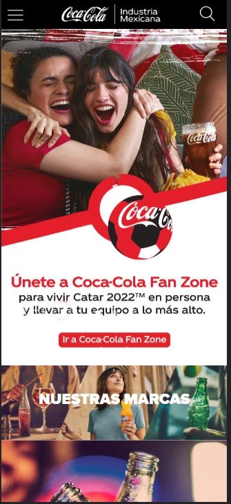

In my opinion, this website meets the requirements for Visual Hierarchy because the elements are shown in order of importance, the font size gets the attention of the reader by defining titles with bigger fonts and this makes it easy to read and follow.
The Pathway Connect portal is a good example for repetition because it has elements repeated throughout the design of the website, it's characteristic yellow color appears in different places, that makes it unique and visually appealing for the reader and brings a sense of unity.

This websiste is not unique at all, but the contrast between elements,fonts and images makes it easy to read, the colors stand out from each other and it helps to define areas of the website easily.